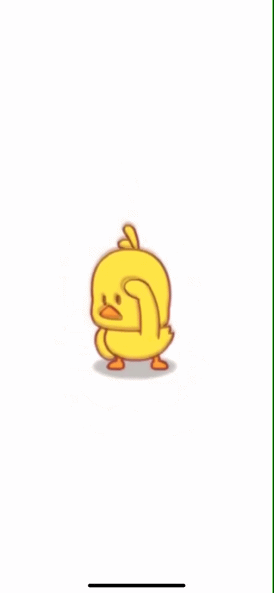
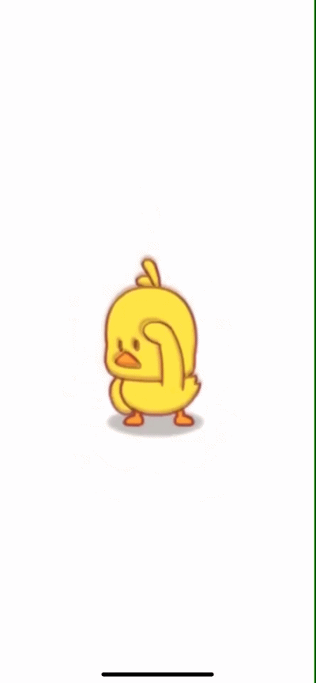

- 欧洲
-
亚洲
-
东亚
- 中国
- 韩国
- 朝鲜
- 南亚
- 西亚
- 北亚
- 中亚
- 东南亚
-
东亚
- 非洲
- 南美洲
- 北美洲
- 大洋洲
- 南极洲
-
一月
- 星期一
- 星期二
- 星期三
- 星期四
- 星期五
- 二月
- 三月
- 四月
- 五月
- 人物
- 政治人物
- 历史人物
- 经济人物
- 话题人物
div标签1
div标签2
div标签3
标签实验
第一段，华中师范大学web程序设计课
<p> </p> © ≈ ⇓其他垃圾（上海称干垃圾）包括除上述几类垃圾之外的砖瓦陶瓷、渣土、卫生间废纸、纸巾等难以回收的废弃物及尘土、食品袋（盒）。采取卫生填埋可有效减少对地下水、地表水、土壤及空气的污染。
大棒骨因为“难腐蚀”被列入“其它垃圾”。玉米核、坚果壳、果核、鸡骨等则是餐厨垃圾。
卫生纸：厕纸、卫生纸遇水即溶，不算可回收的“纸张”，类似的还有烟盒等。
餐厨垃圾装袋：常用的塑料袋，即使是可以降解的也远比餐厨垃圾更难腐蚀。此外塑料袋本身是可回收垃圾。正确做法应该是将餐厨垃圾倒入垃圾桶，塑料袋另扔进“可回收垃圾”桶。
果壳：在垃圾分类中，“果壳瓜皮”的标识就是花生壳，的确属于厨余垃圾。家里用剩的废弃食用油，也归类在“厨余垃圾”。
尘土：在垃圾分类中，尘土属于“其它垃圾”，但残枝落叶属于“厨余垃圾”，包括家里开败的鲜花等。
厨余垃圾（上海称湿垃圾）包括剩菜剩饭、骨头、菜根菜叶、果皮等食品类废物。经生物技术就地处理堆肥，每吨可生产0.6~0.7吨有机肥料。
有害垃圾含有对人体健康有害的重金属、有毒的物质或者对环境造成现实危害或者潜在危害的废弃物。包括电池、荧光灯管、灯泡、水银温度计、油漆桶、部分家电、过期药品、过期化妆品等。这些垃圾一般使用单独回收或填埋处理。
可回收物主要包括废纸、塑料、玻璃、金属和布料五大类。
废纸：主要包括报纸、期刊、图书、各种包装纸等。但是，要注意纸巾和厕所纸由于水溶性太强不可回收。
塑料：各种塑料袋、塑料泡沫、塑料包装、一次性塑料餐盒餐具、硬塑料、塑料牙刷、塑料杯子、矿泉水瓶等。
玻璃：主要包括各种玻璃瓶、碎玻璃片、镜子、暖瓶等。
金属物：主要包括易拉罐、罐头盒等。
布料：主要包括废弃衣服、桌布、洗脸巾、书包、鞋等。
这些垃圾通过综合处理回收利用，可以减少污染，节省资源。如每回收1吨废纸可造好纸850公斤，节省木材300公斤，比等量生产减少污染74%；每回收1吨塑料饮料瓶可获得0.7吨二级原料；每回收1吨废钢铁可炼好钢0.9吨，比用矿石冶炼节约成本47%，减少空气污染75%，减少97%的水污染和固体废物。
| 星期一 | 星期二 | 星期三 | 星期四 | 星期五 | |
| 第一节 | 数学 | 语文 | 语文 | 数学 | |
| 第二节 | 语文 | 数学 | 英语 | 语文 | 数学 |
| 第三节 | 数学 | 语文 | 英语 | 英语 | 语文 |
| 第四节 | 英语 | 语文 | 数学 | 语文 | 英语 |
| 第五节 | 语文 | 英语 | 英语 | 语文 | 数学 |
| 第六节 | 数学 | 语文 | 英语 | 英语 | |